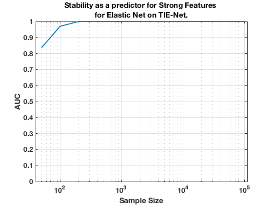

TIE-Net. Summary. Elastic Net.
summary_stability_type("TieNet", 3)
TOTAL COUNTS: Total=53, Strong=23, Weak=26, Irrelevant=4
Figure 25. Stability as a predictor for Strong Features for Elastic Net on TIE-Net.
____________________________________________________________________________________

Table 25. Breakdown of Stability by Feature Type for Elastic Net.
__________________________________________________________________
(1) Number Features Repeat (n_fs_rep): number of unique features that were selected in a repeat
(2) Number Features Fold (n_fs_fold): number of unique features that were selected in a fold
(3) Feature Stability ~ Feature Selection Frequency
Sample_Size All_n_fs_rep All_n_fs_fold All_Stability
___________ _______________________ _____________________ ___________________
' 50 ' ' 26.000 +/- 0.165 ' ' 7.196 +/- 0.052 ' ' 0.136 +/- 0.095 '
' 100 ' ' 34.260 +/- 0.168 ' ' 11.006 +/- 0.069 ' ' 0.208 +/- 0.119 '
' 200 ' ' 36.640 +/- 0.132 ' ' 12.872 +/- 0.076 ' ' 0.243 +/- 0.158 '
' 300 ' ' 36.000 +/- 0.117 ' ' 13.182 +/- 0.086 ' ' 0.249 +/- 0.178 '
' 400 ' ' 38.220 +/- 0.087 ' ' 15.834 +/- 0.076 ' ' 0.299 +/- 0.205 '
' 500 ' ' 37.080 +/- 0.091 ' ' 15.758 +/- 0.095 ' ' 0.297 +/- 0.217 '
' 1000 ' ' 39.800 +/- 0.072 ' ' 19.796 +/- 0.062 ' ' 0.374 +/- 0.262 '
' 2000 ' ' 39.400 +/- 0.064 ' ' 22.044 +/- 0.061 ' ' 0.416 +/- 0.305 '
' 5000 ' ' 39.180 +/- 0.060 ' ' 25.264 +/- 0.045 ' ' 0.477 +/- 0.348 '
' 10000 ' ' 39.440 +/- 0.064 ' ' 27.024 +/- 0.048 ' ' 0.510 +/- 0.364 '
' 100000 ' ' 38.420 +/- 0.058 ' ' 25.610 +/- 0.041 ' ' 0.483 +/- 0.352 '
Sample_Size Strong_n_fs_rep Strong_n_fs_fold Strong_Stability
___________ _____________________ _____________________ ___________________
' 50 ' ' 13.840 +/- 0.098 ' ' 4.314 +/- 0.037 ' ' 0.188 +/- 0.121 '
' 100 ' ' 17.780 +/- 0.099 ' ' 6.790 +/- 0.042 ' ' 0.295 +/- 0.131 '
' 200 ' ' 20.260 +/- 0.068 ' ' 8.776 +/- 0.049 ' ' 0.382 +/- 0.149 '
' 300 ' ' 20.540 +/- 0.076 ' ' 9.460 +/- 0.059 ' ' 0.411 +/- 0.157 '
' 400 ' ' 22.020 +/- 0.041 ' ' 11.556 +/- 0.059 ' ' 0.502 +/- 0.138 '
' 500 ' ' 21.900 +/- 0.048 ' ' 11.778 +/- 0.072 ' ' 0.512 +/- 0.146 '
' 1000 ' ' 23.000 +/- 0.000 ' ' 15.080 +/- 0.049 ' ' 0.656 +/- 0.091 '
' 2000 ' ' 23.000 +/- 0.000 ' ' 17.184 +/- 0.049 ' ' 0.747 +/- 0.088 '
' 5000 ' ' 23.000 +/- 0.000 ' ' 19.692 +/- 0.033 ' ' 0.856 +/- 0.064 '
' 10000 ' ' 23.000 +/- 0.000 ' ' 20.906 +/- 0.026 ' ' 0.909 +/- 0.052 '
' 100000 ' ' 23.000 +/- 0.000 ' ' 19.768 +/- 0.031 ' ' 0.859 +/- 0.100 '
Sample_Size Weak_n_fs_rep Weak_n_fs_fold Weak_Stability
___________ _____________________ _____________________ ___________________
' 50 ' ' 10.620 +/- 0.090 ' ' 2.532 +/- 0.029 ' ' 0.097 +/- 0.039 '
' 100 ' ' 14.320 +/- 0.085 ' ' 3.654 +/- 0.035 ' ' 0.141 +/- 0.042 '
' 200 ' ' 14.060 +/- 0.076 ' ' 3.514 +/- 0.032 ' ' 0.135 +/- 0.037 '
' 300 ' ' 13.280 +/- 0.083 ' ' 3.256 +/- 0.038 ' ' 0.125 +/- 0.036 '
' 400 ' ' 14.260 +/- 0.073 ' ' 3.812 +/- 0.030 ' ' 0.147 +/- 0.053 '
' 500 ' ' 13.260 +/- 0.072 ' ' 3.496 +/- 0.031 ' ' 0.134 +/- 0.063 '
' 1000 ' ' 14.560 +/- 0.061 ' ' 4.184 +/- 0.030 ' ' 0.161 +/- 0.080 '
' 2000 ' ' 14.220 +/- 0.058 ' ' 4.310 +/- 0.024 ' ' 0.166 +/- 0.093 '
' 5000 ' ' 14.100 +/- 0.051 ' ' 4.962 +/- 0.025 ' ' 0.191 +/- 0.121 '
' 10000 ' ' 14.360 +/- 0.056 ' ' 5.406 +/- 0.035 ' ' 0.208 +/- 0.117 '
' 100000 ' ' 13.460 +/- 0.055 ' ' 5.214 +/- 0.027 ' ' 0.201 +/- 0.137 '
Sample_Size Irrelevant_n_fs_rep Irrelevant_n_fs_fold Irrelevant_Stability
___________ ___________________ ____________________ ____________________
' 50 ' ' 1.540 +/- 0.021 ' ' 0.350 +/- 0.007 ' ' 0.088 +/- 0.031 '
' 100 ' ' 2.160 +/- 0.022 ' ' 0.562 +/- 0.008 ' ' 0.141 +/- 0.018 '
' 200 ' ' 2.320 +/- 0.023 ' ' 0.582 +/- 0.009 ' ' 0.145 +/- 0.021 '
' 300 ' ' 2.180 +/- 0.021 ' ' 0.466 +/- 0.006 ' ' 0.117 +/- 0.019 '
' 400 ' ' 1.940 +/- 0.020 ' ' 0.466 +/- 0.007 ' ' 0.117 +/- 0.047 '
' 500 ' ' 1.920 +/- 0.021 ' ' 0.484 +/- 0.010 ' ' 0.121 +/- 0.014 '
' 1000 ' ' 2.240 +/- 0.023 ' ' 0.532 +/- 0.007 ' ' 0.133 +/- 0.016 '
' 2000 ' ' 2.180 +/- 0.018 ' ' 0.550 +/- 0.007 ' ' 0.138 +/- 0.006 '
' 5000 ' ' 2.080 +/- 0.019 ' ' 0.610 +/- 0.008 ' ' 0.152 +/- 0.015 '
' 10000 ' ' 2.080 +/- 0.017 ' ' 0.712 +/- 0.008 ' ' 0.178 +/- 0.066 '
' 100000 ' ' 1.960 +/- 0.018 ' ' 0.628 +/- 0.009 ' ' 0.157 +/- 0.031 '